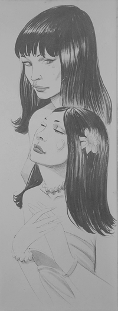
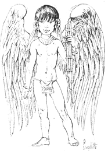
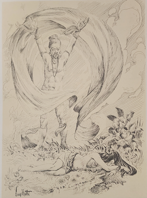
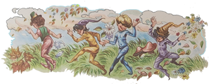
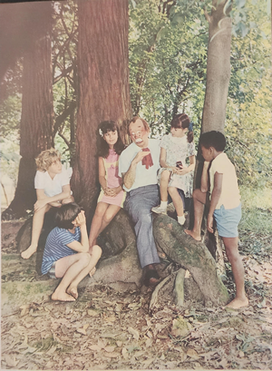

Quando estavam dando um passeio pela floresta, Marisa fez sinal para que os outrosparassem e disse:
- Ouçam que canto bonito! De quem será? Quem está cantando?
O Arrelia escutou atentamente e dirigiu-se à menina.
- De fato, Marisa. É muito bonito. Vamos ver qual de vocês adivinha quem está cantando.
- Eu sei, Arrelia, eu sei! – disse Carlinhos com cara de medo.
- Sabe, Carlinhos? Pois “diuga”, vamos!
- É a iara! Vamos embora daqui! Senão estamos perdidos!
- Calma! Não é a iara, não! Os índios dizem que ela tem o canto mais bonito ainda!
- Mais bonito ainda! Então quem está cantando?
É o uirapuru. Falei nele na outra estória. Lembram-se? De qualquer forma, não deixa de ser uma iara para as aves.
- Por que?
- Porque quando ele cante atrai as outras aves. Elas ficam silenciosas em volta dele ouvindo-o cantar. Só que não costuma leva-las para o fundo das águas como faz a iara com a gente. Dizem que é tão mágico que depois de morto serve de talismã.
- Talismã? O que é talismã? – perguntou Sérgio.
- Qualquer objeto que uma pessoa traz consigo e acreditando que ele pode livrá-la do mal e dar-lhe sorte.
- Bem que eu queria um!
Por que, Sérgio?
- Estou precisando de sorte na escola. Preciso melhorar minhas notas.
- Para isso conheço um bom talismã. É “danaudo” de bom. Quer que eu diga?
- É claro! Diga, Arrelia!
- É o estudo. O estudo é o melhor talismã para a gente conseguir boas notas!
- Ah! Arrelia! Pensei que era verdade!
- E não é? Você conhece outro modo?
Não, não conheço.
Pois então. Mas vamos ouvir o cando do uirapuru. Não é qualquer um que tem esta “felicidaude”! Vamos ver se conseguimos encontra-lo? Mas devagar senão ele foge!
Depois de alguma busca, o Arrelia conseguiu localizá-lo no alto de uma enorme árvore:
- Olhem! Lá está ele! Vejam! Veem como está rodeado de pássaros? Todos querem ouví-lo! E não é para menos! Ouçam que notas!
- Aquele é o uirapuru? – perguntou Jaci, surpresa. Eu estava imaginando um pássaro bem mais bonito!
- Está vendo, Jaci, como a gente pode enganar-se? – disse o Arrelia. Mas ele já foi uma índia muito bonita!
- O que? Aquele passarinho já foi uma índia? Como pode? – exclamou a menina completamente espantada.
- Lembre-se de que no mundo das lendas tudo é possível.
- E como foi que aconteceu?
- Foi assim: Duas moças índias eram muito amigas. Estavam sempre juntas. Uma não largava a outra. Se a primeira gostava de uma coisa, a outra gostava também. Eram admiradas pela tribo inteira. Que “amizaude”! Nunca ninguém tinha visto coisa igual. Se uma estava doente, a outra ficava perto dela. Não saía para divertir-se de jeito nenhum.
Um dia elas estavam passeando pela aldeia e encontraram o novo cacique, um homem muito bonitão. Jamais haviam notado como ele era atraente. E a partir daquele momento as duas começaram a gostar dele. Mas uma não disse nada à outra. Só mais tarde, porém não revelaram quem era o moço.
- Estou gostando de um jovem tão simpático que você nem faz ideia – disse uma.
- Eu também! Você precisava ver que aparência ele tem! – respondeu a outra.
Aí a primeira pediu:
- Diga-me que é! Estou ansiosa!
A segunda não quis dizer:
- Não. Não posso contar porque desejo saber primeiro se ele gosta de mim. Ainda não tenho certeza! Conte você!

- Também não posso contar. Estou como você. Por enquanto não sei o que ele pensa de mim.
Uma respeitou o desejo da outra e não tocaram mais no assunto. Continuaram a andar sempre juntas e sempre amigas. Só que a preocupação com o cacique não deixava que elas se divertissem mais como antes. E o tempo foi passando.
Meses depois, estavam andando pela floresta e falando sobre tudo o que era possível. Menos sobre o moço misterioso. Tanto falaram que ficaram sem ter o que dizer. E como não podiam ficar sem dizer nada, começaram a falar sobre o moço misterioso.
- Não sei – disse uma – mas creio que ele nem sabe que existo. Pelo menos jamais olhou para mim!
- Comigo também está acontecendo a mesma coisa – disse a outra. Ele nem toma conhecimento da minha presença.
- Mas quem é esse jovem que nem percebe a sua presença?
- Não posso contar. Conte você.
Está bem, Mas só se você prometer que me contará também. Promete?
- Prometo. Pode contar.
Bem. Mas não vá dar risada.
- Não dou, não. Pode contar.
- É ... é o cacique!
- O cacique? Mas não é possível! Você está brincando!
- Por que brincando? Não posso gostar dele? Por que ficou tão assustada?
Porque ele é o mesmo moço de quem lhe falei!
E as duas ficaram ali, uma olhando para a outra, completamente “apalermaudas”.
- Não é verdade! Você está brincando comigo! Não acredito!

- Quem não acredita sou eu! Você quer brincar comigo, não quer?
Por fim acabaram vendo que ambas gostavam do mesmo moço. O que podiam fazer? Ficaram pensando, pensando, até que uma sugeriu:
- É muito simples. Vamos ficar como estamos. Um dia ele há de dizer se gosta de uma de nós. Esta se casará com ele. A outra se conformará. Se não gostar de nenhuma, paciência.
- Mas como vamos fazer para que ele saiba que gostamos dele? Parece que somente olhar não basta.
- Então o melhor é lhe falarmos diretamente.
- Isso mesmo. É o melhor. E quando iremos?
- Quando tivermos coragem
Como a coragem não veio, tudo continuou como estava. Mas um dia a coisa mudou. Encontravam-se as duas passeando pela aldeia quando surgiu o cacique todo “simpáutico”. Ao passar por elas deu-lhes um sorriso. Elas quase desmaiaram.
- Foi para mim!
- Não! Eu vi! Foi para mim que ele sorriu!
Encontraram-se outras vezes com ele e a dúvida continuou. Não conseguiam saber de quem ele estava gostando. Aí surgiu uma ideia. A primeira moça propôs:
- Vamos separar-nos. É o único modo de sabermos de qual ele gosta. Se sorrir para você, é de você. Se sorrir para mim, é de mim. Está certo?
A outra concordou a naquele dia não andaram juntas. Quando se encontraram no fim do dia, uma disse à outra:
- Está resolvido. É de mim que ele gosta pois quando nos encontramos, ele me sorriu.
- Acho que você se enganou – disse a outra – pois foi para mim que ele sorriu!
Só havia mesmo um modo de conseguir a certeza: perguntar ao cacique. Mas como para isto elas não sentiam coragem, continuaram na mesma. E guardaram segredo. Por ser segredo, logo a aldeia inteira sabia do caso. Aí os mais velhos resolveram interferir e perguntar ao cacique de qual ele realmente gostava.
Quando o cacique ouviu a pergunta, ficou meio envergonhado, sem jeito, e não queria dizer. Tanto insistiram, porém, que ele resolveu responder:
- Bem, a verdade é que, é que gosto das duas!
- Ah! ... – exclamaram todos.
- E como vai ser? – perguntou um.
- Não pode ficar assim – respondeu outro.
O cacique pensou, pensou, e disse:
- Já sei. Amanhã iremos todos à floresta. Cada uma das moças levará arco e flecha. A que acertar em pleno voo a ave que eu indicar será escolhida por mim.
Como ninguém apresentou outra solução, todos concordaram com o cacique. A aldeia em peso ficou alvoroçada.
No dia seguinte, todos os que podiam andar seguiram para a floresta. Numa clareira, as duas índias empunharam o arco e a flecha e ficaram prontas para atirar. Quando apareceu uma ave muito branca e voando bem alto, o cacique ordenou:
- Agora!
As duas setas partiram ao mesmo tempo em direção da ave que voava despreocupadamente, sem ter nada com a coisa. Não se ouvia nem um suspiro sair da multidão de índios. Após um breve momento de expectativa, a ave começou a cair e uma flecha também.
- Acertou! Olhem! Acertou! – gritaram alguns.
- Mas qual delas terá acertado? – perguntaram outros.

- Logo saberemos! – outros disseram.
Vários meninos índios saíram correndo para apanhar a ave. Como havia sido feito um sinal diferente em cada seta, seria fácil saber qual das moças acertara. Naturalmente se em vez de uma, as duas flechas houvessem acertado o alvo, elas fariam novas provas até conseguir-se a vencedora. Mas não seria preciso pois todos tinham visto uma das flechas cair.
Em grande algazarra as crianças voltaram com a ave. Todos gritavam. Somente as duas índias pareciam de pedra. Apenas uma seta estava espetada no corpo da ave, é claro. A marca foi verificada e a dona da flecha foi escolhida para casar-se com o cacique. A que perdeu parecia conformada embora um pouco aborrecida, desanimada.
O casamento foi realizado com grandes festas e o casal foi morar numa cabana muito bonita.
- Tudo acabou bem e foram muito felizes, não é, Arrelia? E o uirapuru? – interrompeu Jaci.
A moça que perdeu, aborrecida pela derrota e pela falta da amiga, foi ficando cada vez mais triste até que um dia, não suportando mais a tristeza, procurou um lugar distante e começou a chorar. E chorou tanto, mas tanto, que as suas lágrimas formaram um riacho.
Tupã, o deus dos índios, estranhou o novo córrego que havia surgido de repente e veio ver o que estava acontecendo. Encontrou a pobre moça que chorava sem parar e sentiu pena da “coitauda”.

- Que aconteceu, minha filha? – perguntou.
A moça contou-lhe tudo. Tupã ouviu-a e lhe respondeu:>
- Compreendo sua tristeza mas você perdeu e precisa aceitar a derrota. Saber perder é uma vitória. Precisa conformar-se.
- Estou quase conformada. O que me deixa mais triste é a saudade que seinto, tanto do cacique como de minha amiga. E não tenho coragem de encontra-los pois não quero que vejam como estou triste. Ah! Se o senhor me transformasse numa ave ... Eu poderia vê-los sem que me percebessem.
Compadecido, Tupã resolveu fazer-lhe a vontade. E no lugar da moça surgiu um passarinho de aparência tão simples que não chamava a atenção. Imediatamente o passarinho voou para a cabana do cacique. Assim que chegou, viu o cacique e a esposa tão felizes, mas tão felizes que a índia sentiu ciúme e ficou mais triste ainda. Agora sim. Era um pobre passarinho e mais triste do que nunca. Mais uma vez Tupã sentiu pena da índia e começou a pensar numa solução. Lembrou-se que estava aborrecido com o barulho que as aves andavam fazendo na floresta. Era demais. Todas queriam cantar e gritar ao mesmo tempo. Já era hora de encontrar uma solução. Precisava achar uma ave que conseguisse impor um pouco de ordem naquela algazarra. Ali estava a oportunidade. Duas soluções de uma vez só: daria um belo canto à índia-passarinho, mas tão bonito que ela esqueceria sua tristeza e faria os outros pássaros ficarem calados de admiração.

- De agora em diante você será o uirapuru. Seu canto será tão bonito que a fará esquecer sua tristeza. Quando os pássaros ouvirem suas notas maravilhosas não poderão resistir. Ficarão em silêncio para ouvi-la cantar.
E assim foi. Até hoje a moça índia canta quando sente tristeza e toda a “passarauda” fica em silêncio para ouvir o seu canto mágico.
Realmente é um canto fascinante. Tem qualquer coisa que prende a gente, que empolga.
- Se eu pudesse pegar um! – exclamou Carlinhos.
- E para que você quer pegar um uirapuru? – estranhou o Arrelia.
O menino olhou para ele espantado como se não houvesse dúvida na sua pergunta:
- Para que? Para por na gaiola, ora. Já pensou o que é ter esse passarinho em casa?
- Duvido que ele se habituasse a viver na gaiola. E depois, você teria coragem de prender um pássaro? Na minha opinião, é uma das piores coisas que uma pessoa pode fazer. Ainda mais considerando que o uirapuru é uma índia transformada em pássaro por Tupã! Digamos que você pusesse o uirapuru na gaiola e um dia, ao levantar-se, desse com Tupã, bravo como nem sei o que.
- Não brinque! – pediu Carlinhos. Não quero mais prender o uirapuru, não! Nem sonhando!
